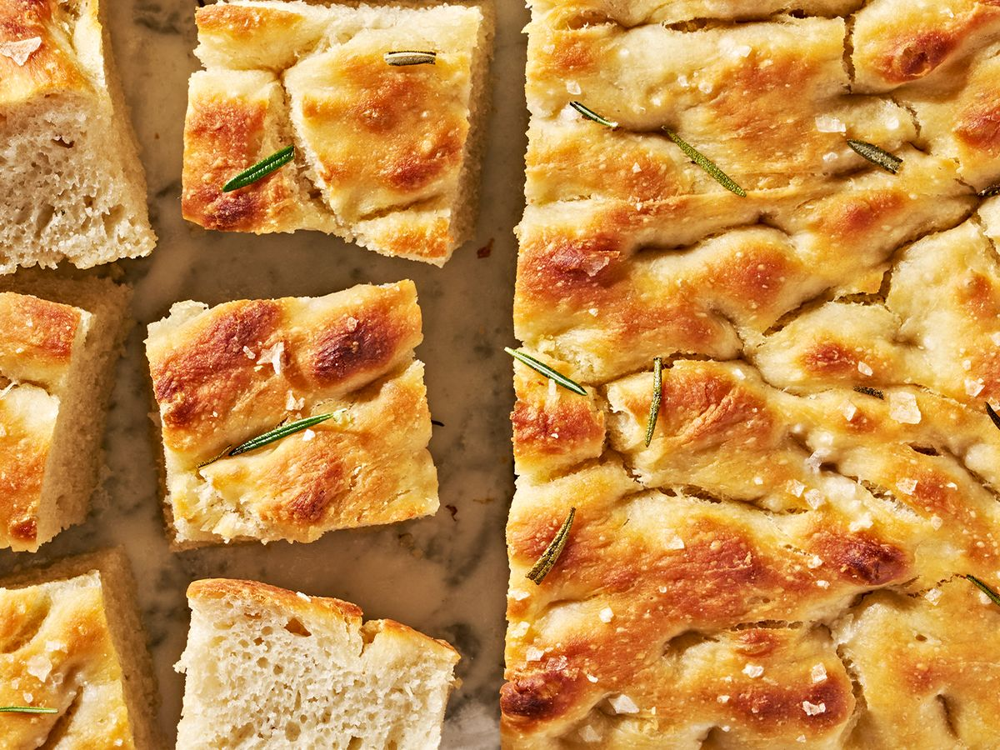

Foccacia Bread
A fairly long and exhaustive focaccia recipe that only turns out good sometimes. Time to cook: 2 days.

Ingredients
- 1/4oz. Active Dry Yeast
- 2tsp Honey
- 5cups All-Purpose Flour
- 1tbsp Morten's Kosher Salt
- 6tbsp EVOO, plus some for hands
Steps
- Whisk yeast, honey, and 2.5 cups of lukewarm water. Let sit for 5 minutes.
- Add 5 cups of flour and the salt to the bowl. Mix well until a shaggy dough forms.
- Pour 4tbsp EVOO into a bowl for fridge. Transfer dough and turn to coat. Cover and chill until
dough is doubled in size at least-- 8hrs-24hrs.
You can also let the dough rise at room temp for 3-4hrs instead.
- Butter a 13x9" baking tray. Add 1tbsp EVOO into the center of the pan. Keeping
the dough in the bowl, form dough into a ball, or deflate it. Transfer to buttered pan.
- Transfer the dough to the prepped buttered pan. Let rise, uncovered, in a dry, warm spot
for 1.5-4hrs.
- Place oven rack in the middle. Preheat to 450 degrees.
- To see if the dough is ready, poke it with your finger. It should spring back slowly,
leaving an indentation.
- Oil your hands lightly. Stretch dough to fit pan. Dimple foccacia aggressively. Drizzle
with olive oil and salt.
- This is where you add your toppings. I personally steal rosemary from my neighbors garden,
and then leave freshly baked bread on their doorstep in exchange.
I have added kimchi in the past, which was very good, but required no theivery and therefore
very little interest for me.
- Bake until golden brown all over-- 20-30mins.